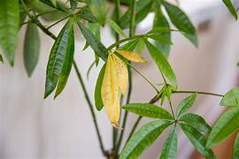
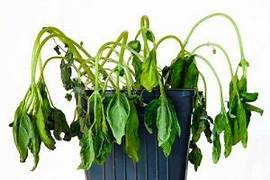
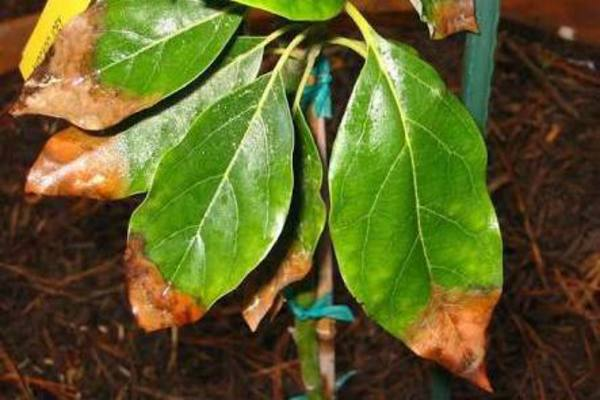
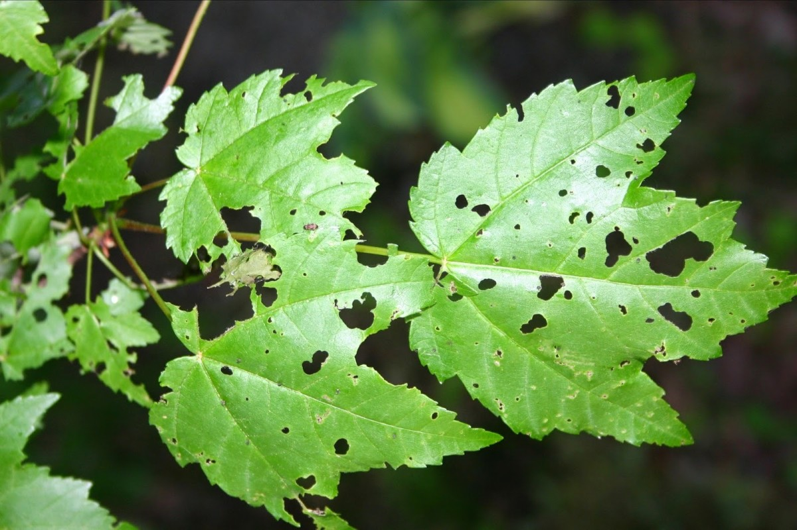
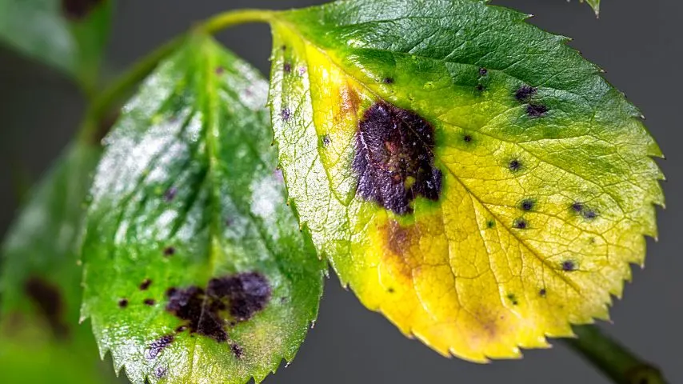

Common Issues
1.Yellowing Leaves

Causes :
- Overwatering (root rot)
- Underwatering (drought stress)
- Nutrient deficiencies (especially nitrogen)
- Poor drainage
- Pest infestations (sap-sucking insects like aphids)
2.Wilting or Drooping Leaves

Causes :
- Lack of water or excessive heat
- Overwatering causing root rot
- Transplant shock
- Pest damage (root-eating insects)
3.Brown or Crispy Leaf Edges

Causes :
- Underwatering
- Low humidity (common in indoor plants)
- Excess fertilizer buildup (salt burn)
- Sunburn (excessive direct sunlight)
4.Holes in Leaves or Chewed Edges

Causes :
- Insects (caterpillars, beetles, slugs, snails)
- Animal damage (rabbits, deer, rodents)
5.Spots or Discoloration

Causes :
- Fungal infections (powdery mildew, leaf spot)
- Bacterial or viral diseases
- Pest infestations (spider mites, thrips)
- Chemical burns from pesticides or fertilizers
Refer below video for how to fix them :